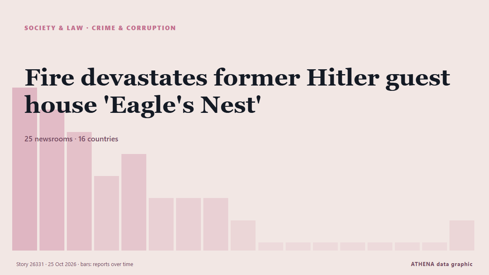

Fire devastates former Hitler guest house 'Eagle's Nest'

Firefighters battled for hours to contain a blaze that engulfed the former Nazi guest house known as 'The Eagle's Nest' in southern Germany, while police investigated the cause after detaining a man… από RTÉ News
Αναφέρθηκε ανεξάρτητα από 25 μέσα σε 16 χώρες από τις 24 Οκτ, πρώτο από το Times of India· η κάλυψη εξασθενεί. Το ATHENA εκτιμά τον κίνδυνο αυξημένο (4.8/10), κυρίως λόγω της σοβαρότητας της βλάβης που περιγράφεται και της γεωγραφικής και τομεακής εμβέλειάς του. Η βεβαιότητα είναι 91% (υψηλή), καθώς το επιβεβαιώνουν 25 ανεξάρτητα μέσα με μέση αξιοπιστία πηγών 77%.
Γιατί έχει σημασία: Οι νομικές αλλαγές και οι αλλαγές πολιτικής μεταβάλλουν δικαιώματα, υποχρεώσεις και δημόσιες υπηρεσίες για όσους αφορούν.
Τι άλλαξε: 10 νέες αναφορές από 10 μέσα στο 24ωρο έως 25 Οκτ.
Οι τίτλοι των ειδήσεων παρουσιάζονται στα αγγλικά, όπως δημοσιεύτηκαν.
Με μια ματιά
Επιλέγεται, βαθμολογείται και γράφεται από τη δημοσιευμένη μεθοδολογία του ATHENA. Κανένας συντάκτης δεν παρεμβαίνει σε μεμονωμένα γεγονότα. Πώς παράγεται ›
| 24 Oct 02:04 UTC | 7 |
|---|---|
| 24 Oct 04:04 UTC | 6 |
| 24 Oct 06:04 UTC | 5 |
| 24 Oct 08:04 UTC | 3 |
| 24 Oct 10:04 UTC | 4 |
| 24 Oct 12:04 UTC | 2 |
| 24 Oct 14:04 UTC | 2 |
| 24 Oct 16:04 UTC | 2 |
| 24 Oct 18:04 UTC | 1 |
| 24 Oct 20:04 UTC | 0 |
| 24 Oct 22:04 UTC | 0 |
| 25 Oct 00:04 UTC | 0 |
| 25 Oct 02:04 UTC | 0 |
| 25 Oct 04:04 UTC | 0 |
| 25 Oct 06:04 UTC | 0 |
| 25 Oct 08:04 UTC | 0 |
| 25 Oct 10:04 UTC | 1 |
| 24 Oct 02:20 UTC | 3.3 |
|---|---|
| 24 Oct 02:55 UTC | 4.4 |
| 24 Oct 12:52 UTC | 4.8 |
| 25 Oct 10:36 UTC | 4.8 |
Γιατί αυτοί οι αριθμοί
Σημασία
Κίνδυνος
Βεβαιότητα
Η κάλυψη — ποιος το ανέφερε και πότε
ο τίτλος όπως δημοσιεύτηκε · ανοίγει το πρωτότυπο- Times of India · Ινδία · IndiaFire engulfs Hitler’s teahouse ‘Eagle’s Nest’ in Germany; one arrested
- DW English · Γερμανία · GermanyHitler's Eagle's Nest retreat catches fire, police say
- The Straits Times · Σιγκαπούρη · SingaporeFire breaks out at Hitler’s mountain retreat, suspect arrested
- Express Tribune · Πακιστάν · PakistanHitler's historic teahouse goes up in flames in Germany, arson suspected
- NDTV · Ινδία · IndiaFire Engulfs Hitler's Mountain Retreat In Germany's Bavaria, Suspect Detained
- BBC News · Ηνωμένο Βασίλειο · United KingdomMan arrested after fire at Hitler's mountaintop Eagle's Nest retreat
- The Straits Times · Σιγκαπούρη · SingaporeFire devastates former Nazi guest house 'Eagle's Nest'
- Sky News (World) · Ηνωμένο Βασίλειο · United KingdomSuspect arrested after fire at Hitler's 'Eagle's Nest' retreat
- RTÉ News · Ιρλανδία · IrelandFire devastates former Hitler guest house 'Eagle's Nest'
- Dawn · Πακιστάν · PakistanFire breaks out at Hitler's mountain retreat, suspect detained: police
- Business Recorder · Πακιστάν · PakistanSuspect arrested as fire engulfs Hitler's 'Eagle's Nest' retreat, German police say
- Cyprus Mail · Κύπρος · CyprusSuspect arrested as fire engulfs Nazi guest house ‘Eagle’s Nest’
- Haaretz (English) · Ισραήλ · IsraelSuspect arrested as fire engulfs Nazi guest house 'Eagle's Nest', German police say
- The Guardian · Ηνωμένο Βασίλειο · United KingdomSuspect arrested over fire at Hitler’s ‘Eagle’s Nest’ retreat in Bavaria
- The Jerusalem Post · Ισραήλ · IsraelSuspect arrested as fire engulfs Nazi official 'Eagle's Nest' retreat, German police say
- CBS News (World) · Ηνωμένες Πολιτείες · United States1 arrested after fire at Hitler's Eagle's Nest mountain retreat
- Al Jazeera English · Κατάρ · QatarMan arrested after fire breaks out at Hitler’s former Alpine retreat
- Arab Times · Κουβέιτ · KuwaitFire breaks out at Alpine retreat, one person detained
- The Local Germany · Γερμανία · GermanySuspect detained after fire wrecks Hitler's mountain retreat
- ABC News Australia · Αυστραλία · AustraliaFire breaks out at Hitler's mountain retreat, suspect arrested
- DW English · Γερμανία · GermanyGermany news: Merz calls for unity at CSU party conference
- The Independent · Ηνωμένο Βασίλειο · United KingdomPerson in custody after fire engulfs Hitler's retreat Eagle's Nest in Bavarian Alps
- ABC News (International) · Ηνωμένες Πολιτείες · United StatesFire breaks out at Eagle's Nest retreat built for Hitler in Germany; person detained
- Al Jazeera English · Κατάρ · QatarGerman police detain suspect after fire engulfs Hitler’s Eagle’s Nest
- Cyprus Mail · Κύπρος · CyprusFire devastates former Nazi guest house ‘Eagle’s Nest’
- Arab News · Σαουδική Αραβία · Saudi ArabiaFire devastates the Eagle’s Nest retreat built for Hitler in Germany
- Euronews English · Γαλλία · FranceFire engulfs Hitler’s former Eagle’s Nest retreat in Germany
- BBC News · Ηνωμένο Βασίλειο · United KingdomFire engulfs Hitler's mountaintop Eagle's Nest retreat
- Taipei Times · Ταϊβάν · TaiwanFire breaks out at Adolf Hitler’s mountain retreat
- The Straits Times · Σιγκαπούρη · SingaporeSuspect detained after fire wrecks Hitler’s mountain retreat
- NDTV · Ινδία · IndiaSuspect Detained After Fire In Adolf Hitler's Mountain Retreat, Arson Suspected
- DW English · Γερμανία · GermanyGermany news: Fire flares up at Hitler's Eagle's Nest retreat